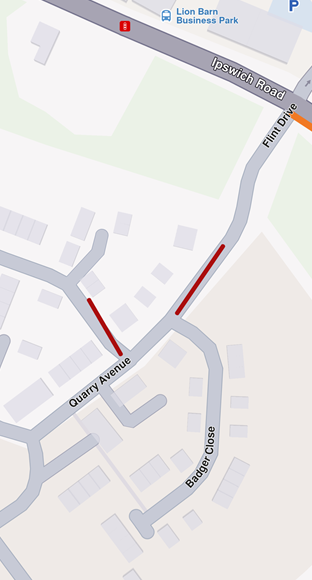
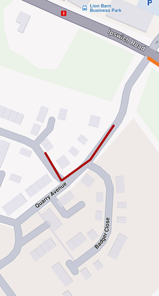
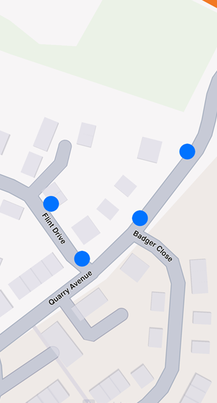
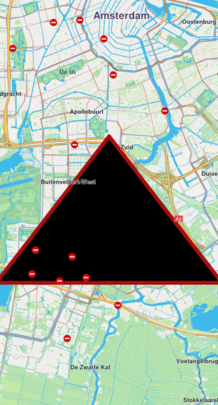
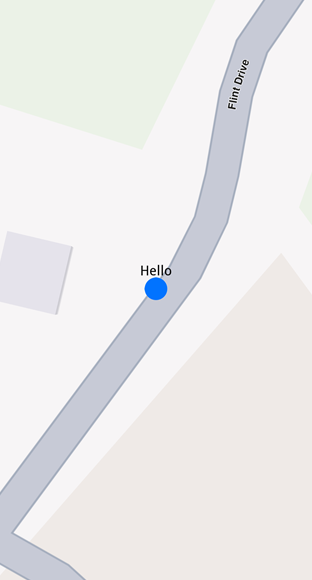
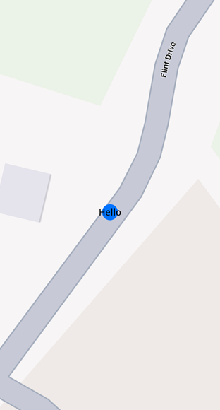
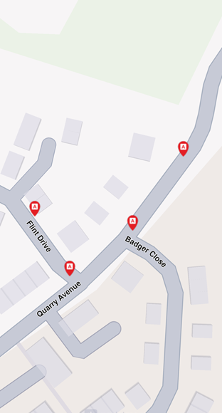
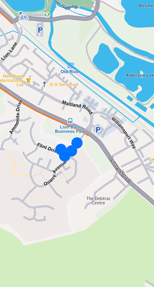
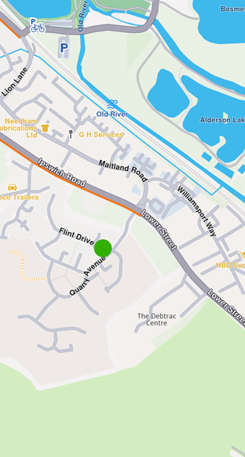

Display Markers¶
Learn how to add and customize markers on your map, including point, polyline, and polygon types.
Overview¶
The Marker class is the base for all marker types. It encapsulates coordinates assigned to specific parts. You can add multiple coordinates to the same marker and separate them into different parts. If no part is specified, coordinates are added to the default part (indexed as 0). Coordinates are stored in a list-like structure where you can specify their index explicitly. By default, the index is -1, meaning the coordinate appends to the end of the list.

Displaying a marker with coordinates separated into different parts

Displaying a marker with coordinates added to same part
// code used for displaying a marker with coordinates separated into different parts
final marker1 = Marker()
..add(Coordinates(latitude: 52.1459, longitude: 1.0613), part: 0)
..add(Coordinates(latitude: 52.14569, longitude: 1.0615), part: 0)
..add(Coordinates(latitude: 52.14585, longitude: 1.06186), part: 1)
..add(Coordinates(latitude: 52.14611, longitude: 1.06215), part: 1);// code used for displaying a marker with coordinates added to the same part
final marker1 = Marker()
..add(Coordinates(latitude: 52.1459, longitude: 1.0613), part: 0)
..add(Coordinates(latitude: 52.14569, longitude: 1.0615), part: 0)
..add(Coordinates(latitude: 52.14585, longitude: 1.06186), part: 0)
..add(Coordinates(latitude: 52.14611, longitude: 1.06215), part: 0);Add Markers To The Map¶
To display markers on your map, add them to a MarkerCollection. When creating a collection, provide a name and specify the MarkerType enum (MarkerType.point, MarkerType.polyline, or MarkerType.polygon).
Once populated, add the MarkerCollection to MapViewMarkerCollections through the GemMapController:
mapController.preferences.markers.add(markerCollection);Marker Types¶
Point markers¶
Point markers display as icons to highlight specific locations dynamically. The MarkerCollection must use MarkerType.point.
final marker = Marker()
..add(Coordinates(latitude: 52.1459, longitude: 1.0613), part: 0)
..add(Coordinates(latitude: 52.14569, longitude: 1.0615), part: 0)
..add(Coordinates(latitude: 52.14585, longitude: 1.06186), part: 1)
..add(Coordinates(latitude: 52.14611, longitude: 1.06215), part: 1);
final markerCollection = MarkerCollection(markerType: MarkerType.point, name: "myCollection");
markerCollection.add(marker);
mapController.preferences.markers.add(markerCollection);
controller.centerOnArea(markerCollection.area);
Displaying point-type markers on map
📝 Note: By default, point markers appear as blue circles. Beyond specific zoom levels, they automatically cluster into orange circles, then red circles at higher clustering levels. See Marker clustering for details.
Polyline markers¶
Polyline markers display continuous lines with one or more connected segments. The MarkerCollection specifies markerType as MarkerType.polyline. Markers can include multiple coordinates that may belong to different parts. Coordinates within the same part connect via a polyline (red by default), while coordinates in different parts remain unconnected.
Polygon markers¶
Polygon markers display closed shapes composed of straight-line segments. The MarkerCollection must use MarkerType.polygon.

Polygon drawn between three coordinates
⚠️ Attention: At least three coordinates must be added to the same part to create a polygon. Otherwise, the result is an open polyline.
Customize polygons using properties like polygonFillColor and polygonTexture. Since polygon edges are polylines, you can refine their appearance with polylineInnerColor, polylineOuterColor, polylineTexture, and more.
Customize Markers¶
Use the MarkerCollectionRenderSettings class to customize marker appearance. This class provides customizable fields for all marker types:
- Polyline markers -
polylineInnerColor,polylineOuterColor,polylineInnerSize,polylineOuterSize - Polygon markers -
polygonFillColor,polygonTexture - Point markers -
labelTextColor,labelTextSize,image,imageSize
All dimensional sizes (imageSize, textSize) are measured in millimeters.
📝 Note: Customizations unrelated to a marker's type are ignored. For example, applying
polylineInnerColortoMarkerType.pointhas no effect.
Configure labeling¶
For MarkerType.point, use the labelingMode field to control label positioning. This field is a set of MarkerLabelingMode enum values. Add values to enable features like positioning text above the icon or placing the icon above coordinates:
final renderSettings = MarkerCollectionRenderSettings(labelingMode: {
MarkerLabelingMode.itemLabelVisible,
MarkerLabelingMode.textAbove,
MarkerLabelingMode.iconBottomCenter
});
mapController.preferences.markers.add(markerCollection, settings: renderSettings);📝 Note: To hide marker or group names, create a
MarkerCollectionRenderSettingswith alabelingModethat excludesMarkerLabelingMode.itemLabelVisibleandMarkerLabelingMode.groupLabelVisible. Both are enabled by default.

Displaying a marker with text above icon

Displaying a marker with text centered on icon
📝 Note: Assign a name to a marker using the
namesetter of theMarkerclass.
Customize icons¶
To customize marker icons, add the collection to MapViewMarkerCollections and configure a MarkerCollectionRenderSettings with the image field. This controls the appearance of the entire collection.
import 'package:flutter/services.dart' show rootBundle;
final ByteData imageData = await rootBundle.load('assets/poi83.png');
final Uint8List pngImage = imageData.buffer.asUint8List();
final renderSettings = MarkerCollectionRenderSettings(image: GemImage(image: pngImage, format: ImageFileFormat.png));
Displaying point-type markers with render settings
Marker sketches¶
To customize each marker individually, use the MarkerSketches class, which extends MarkerCollection. This lets you define unique styles and properties for every marker. Obtain a MarkerSketches object using the MapViewMarkerCollections.getSketches() method:
final sketches = ctrl.preferences.markers.getSketches(MarkerType.point);💡 Tip: There are only three
MarkerSketchescollections—one for each marker type:MarkerType.point,MarkerType.polyline, andMarkerType.polygon. Each collection is a singleton.
Adding markers to MarkerSketches is similar to adding them to MarkerCollection, but you can specify individual MarkerRenderSettings and index for each marker:
final marker1 = Marker()..add(Coordinates(latitude: 39.76741, longitude: -46.8962));
marker1.name = "HelloMarker";
sketches.addMarker(marker1,
settings: MarkerRenderSettings(
labelTextColor: Colors.red,
labelTextSize: 3.0,
image: GemImage(imageId: GemIcon.toll.id)),
index: 0);Displaying a marker using MarkerSketches
Change a marker's appearance after adding it using the setRenderSettings method:
sketches.setRenderSettings(
0, // marker index
MarkerRenderSettings(
labelTextColor: Colors.red,
labelTextSize: 3.0,
image: GemImage(imageId: GemIcon.toll.id))
);getRenderSettings with the marker index:
final returnedSettings = sketches.getRenderSettings(0);🚨 Alert: Calling
getRenderSettingswith an invalid index returns aMarkerRenderSettingsobject with default values.
The MarkerSketches collection doesn't need to be added to MapViewMarkerCollections — it's already part of it. Changes to MarkerSketches automatically reflect on the map.
Marker Clustering¶
Clustering is enabled by default. Beyond a certain zoom level, markers automatically cluster into groups. Customize group images with lowDensityPointsGroupImage, mediumDensityPointsGroupImage, and highDensityPointsGroupImage fields in MarkerCollectionRenderSettings. Set the number of markers per group using lowDensityPointsGroupMaxCount and mediumDensityPointsGroupMaxCount.
// code for markers not grouping at zoom level 70
final renderSettings = MarkerCollectionRenderSettings();
mapController.preferences.markers.add(markerCollection, settings: renderSettings);
mapController.centerOnCoordinates(Coordinates(latitude: 52.14611, longitude: 1.06215), zoomLevel: 70);
Markers not clustering
// code for markers grouping at zoom level 70
final renderSettings = MarkerCollectionRenderSettings(labelTextSize: 3.0, labelingMode: labelingMode, pointsGroupingZoomLevel: 70);
mapController.preferences.markers.add(markerCollection, settings: renderSettings);
mapController.centerOnCoordinates(Coordinates(latitude: 52.14611, longitude: 1.06215), zoomLevel: 70);
Clustered markers
⚠️ Attention: You can disable clustering by setting
pointGroupingZoomLevelto 0. However, this may significantly impact performance for large numbers of markers, as rendering each individual marker increases GPU resource usage.
Group head markers¶
Marker clusters are represented by the first marker in the collection as the group head. Retrieve the group head using the getPointsGroupHead method:
final markerCollection = MarkerCollection(
markerType: MarkerType.point, name: "Collection1");
final marker1 = Marker()
..add(Coordinates(latitude: 39.76717, longitude: -46.89583));
marker1.name = "NiceName";
final marker2 = Marker()
..add(Coordinates(latitude: 39.767138, longitude: -46.895640));
marker2.name = "NiceName2";
final marker3 = Marker()
..add(Coordinates(latitude: 39.767145, longitude: -46.895690));
marker3.name = "NiceName3";
markerCollection.add(marker1);
markerCollection.add(marker2);
markerCollection.add(marker3);
ctrl.preferences.markers.add(markerCollection,
settings:
MarkerCollectionRenderSettings(buildPointsGroupConfig: true));
// This centering triggers marker grouping
ctrl.centerOnCoordinates(
Coordinates(latitude: 39.76717, longitude: -46.89583),
zoomLevel: 50);
// Wait for the center process to finish
await Future.delayed(Duration(milliseconds: 250));
final marker = markerCollection.getPointsGroupHead(marker2.id); // Returns marker1⚠️ Attention: Marker grouping depends on tile loading at the zoom level. Wait for tiles to load; otherwise,
getPointsGroupHeadreturns a reference to the queried marker (not yet grouped), andgetPointsGroupComponentsreturns an empty list.🚨 Alert: This behavior occurs only when
MarkerCollectionis added toMapViewMarkerCollectionsusingMarkerCollectionRenderSettings(buildPointsGroupConfig: true)and markers aregroupedat the zoom level. Otherwise, the method returns a direct reference to the queried marker.
Retrieve all markers in a group using getPointsGroupComponents with the group head marker ID (the groupId). This returns all markers except the group head:
final marker = markerCollection.getPointsGroupHead(marker2.id);
final groupMarkers =
markerCollection.getPointsGroupComponents(marker.id);🚨 Alert: Invoking
getPointsGroupComponentswithout the group head marker ID returns an empty list.
Add Multiple Markers Efficiently¶
For adding many markers simultaneously, use the addList method of MapViewMarkerCollection. This method accepts a list of MarkerWithRenderSettings objects (combining MarkerJson and MarkerRenderSettings):
List<MarkerWithRenderSettings> markers = [];
for (int i = 0; i < 8000; ++i) {
// Generate random coordinates to display some markers.
double randomLat = minLat + random.nextDouble() * (maxLat - minLat);
double randomLon = minLon + random.nextDouble() * (maxLon - minLon);
final marker = MarkerJson(
coords: [Coordinates(latitude: randomLat, longitude: randomLon)],
name: "POI $i",
);
// Choose a random POI icon for the marker and set the label size.
final renderSettings = MarkerRenderSettings(
image: GemImage(
image: listPngs[random.nextInt(listPngs.length)],
format: ImageFileFormat.png),
labelTextSize: 2.0);
// Create a MarkerWithRenderSettings object.
final markerWithRenderSettings =
MarkerWithRenderSettings(marker, renderSettings);
// Add the marker to the list of markers.
markers.add(markerWithRenderSettings);
}
// Create the settings for the collections.
final settings = MarkerCollectionRenderSettings();
// Set the label size.
settings.labelGroupTextSize = 2;
// The zoom level at which the markers will be grouped together.
settings.pointsGroupingZoomLevel = 35;
// Set the image of the collection.
settings.image = GemImage(image: imageBytes, format: ImageFileFormat.png);
// To delete the list you can use this method: mapController.preferences.markers.clear();
// Add the markers and the settings on the map.
mapController.preferences.markers.addList(list: markers, settings: settings, name: "Markers");